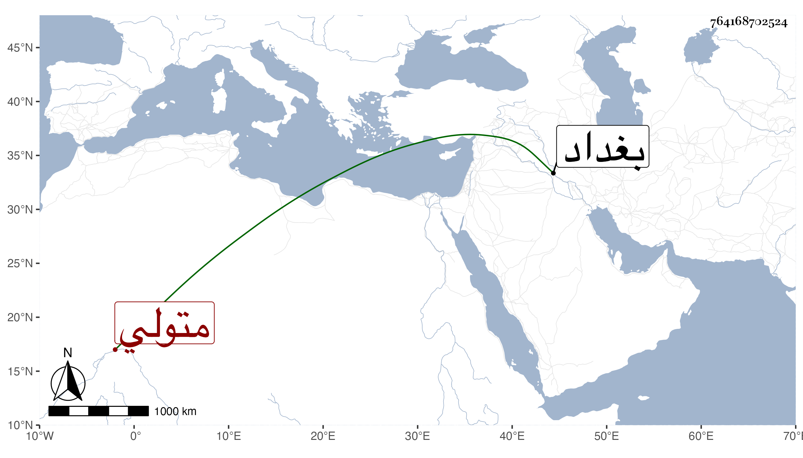

0902Sakhawi.DawLamic.ITO20230111-ara1.EIS1600.764168702524
Biography ID: 764168702524
811
محمد شاه بن قرا يوسف بن قرا محمد متولي بغداد . مات مقتولا في ذي الحجة سنة سبع وثلاثين على حصن يقال له شنكان من بلاد شاه رخ . وكان شر ملوك زمانه فسقا وإبطالا للشرائع ، واستقر بعده في المملكة أمير زاه على ابن أخي قرا يوسف ، طول المقريزي في عقوده ترجمته بالنسبة لما هنا .
